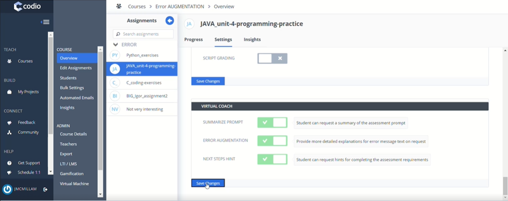
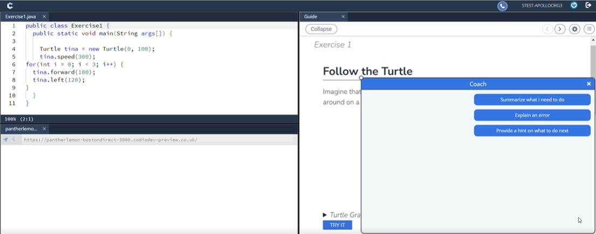
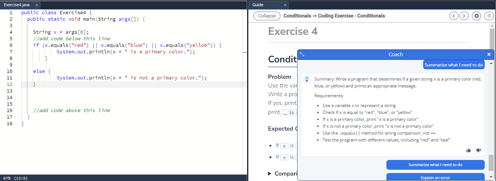
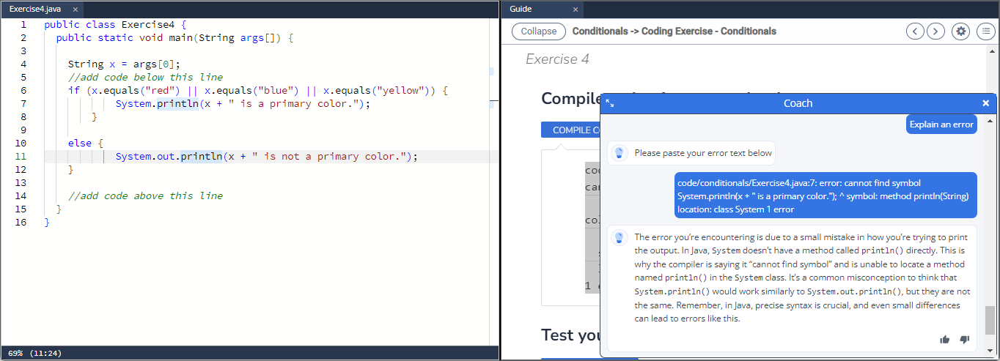
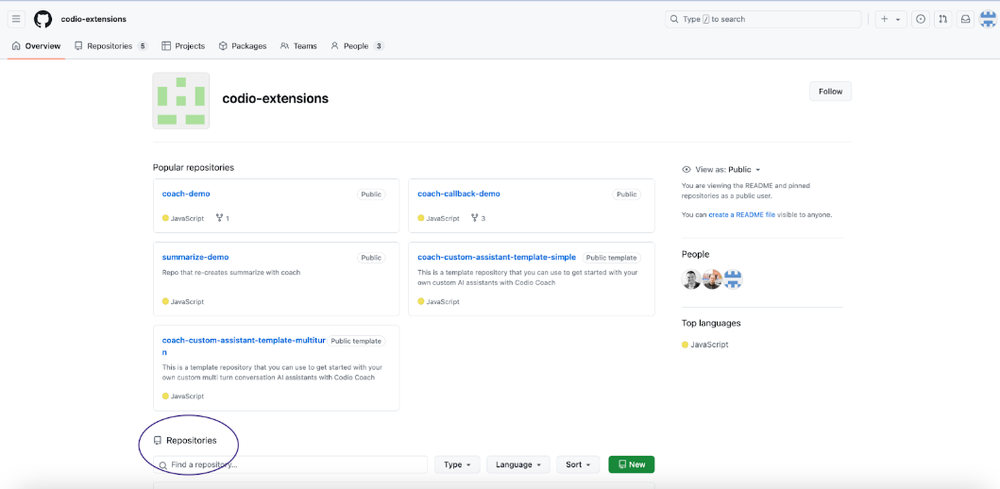
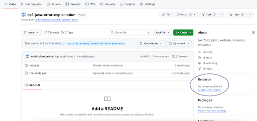
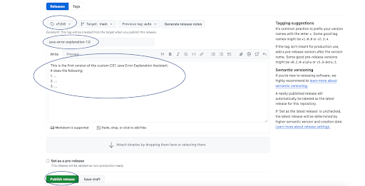
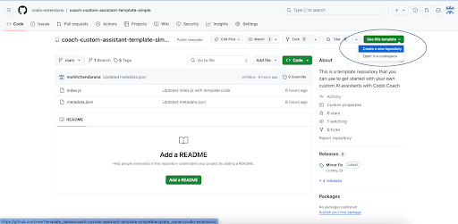
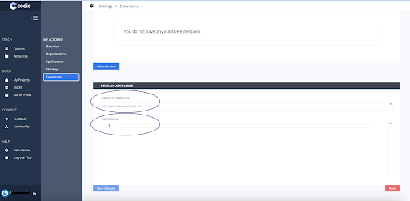

Virtual Coach¶
When Virtual Coach is enabled, students can use AI to assist them with their programming tasks. Codio’s prompts to the AI ensure that only assistance is provided, not solutions. The Virtual Coach can help students understand error messages they have received, gain a better understanding of the assignment prompt, or receive a hint about the next possible steps.
In the assignments settings area, there are three settings you can toggle to enable the following features: Summarize Prompt, Error Augmentation, and Next Steps Hint.

When a student clicks on the Virtual Coach icon in the bottom right corner, a dialog opens, and they can see up to three options depending on the settings applied. If there is no Guide in the assignment only error message augmentation will be available.
Students may select one of the options presented by the coach to receive more information.

Summarize prompt: This option summarizes the text in the guide on the page and provides students with an enumerated set of steps.
Error Augmentation: Provides detailed explanations of error messages.
Next steps hint: Provides students with ideas for the next steps they can take to complete their assignment.

If error output is not directed to the guide, students will need to paste the text of the error message in the prompt field in Virtual Coach.
If an error message is not provided, the student will receive the following: “The provided text does not look like an error message. Please paste an error message below.” If, on the second attempt, the student still does not provide an error message, they will be returned to the first screen with three buttons.

Note
Standard and Advanced Code tests have an additional “Explain this error” button that will appear if Error Augmentation is on and running a code test results in an error state.
Students can provide feedback on the Virtual Coach’s responses by using the thumbs up icon to vote up or the thumbs down icon to vote down the responses. The Virtual Coach window may be resized by dragging the circle in the upper left corner.
Note
You can export Virtual Coach logs using one of the Codio API codio.course.exportCoachData(courseId). For more information on Codio APIs and how to use it, check out Codio JS API
Note
You can review how the Virtual Coach interacts with students by exporting the Course Coach Log Data. For more information, see the Course Coach Log Data
Enable/Disable Virtual Coach Assistants via Bulk Settings¶
You can enable/disable these three settings for all assignments in a course at bulk, check out Batch Assignment Update
The csv template for bulk assignment settings upload has 3 new columns now, one for each of the virtual coach assistants.
These column values in the csv can be set to TRUE to enable any/all of the 3 assistants for any assignments in the course, and FALSE to disable them as part of the bulk settings update process.
Customize Assistants for Virtual Coach¶
You can extend the current capabilities of Coach by adding your own custom assistants as Javascript extensions. You’re going to need a Github account to get started. If you don’t have one, follow the steps by visiting this web page to create: https://docs.github.com/en/get-started/start-your-journey/creating-an-account-on-github
Once you’re signed in to your Github account, you will be able to create, install and test your very own custom AI assistant with Coach.
Customize/Use an existing custom assistant as a Javascript extension¶
Click this link to head over to the Codio Extensions Github Page - https://github.com/codio-extensions and scroll down to the Repositories section.

Choose one of repositories that starts with custom-assistant-example-<example_name>
Note
These examples are experimental and may receive small improvements and updates. If you’re using them as is, please check the respective github repositories for the latest release available.
Click on the green Use This Template button or the Fork button, in the top right corner, to create a copy of the example repo, and give it a unique name - This will be your own copy of the custom assistant where you can make edits to the example code to customize your assistant.
You’ll see 2 files in your repo:
metadata.json: This file will contain some basic information about your extension:
name: The name of your extension - rename this field to describe what your assistant will do
type: For any Coach extension, the default value is “helper”
user_type: Describes who will be able to see the extension - one of 3 possible values: “learner”, “instructor”, “all”
component: For any Coach extension, the default value is “all”
index.js: This file will contain the Javascript code for the extension.
The index.js file has example code of how you can use the Coach API to create your own assistant.
Edit the metadata.json file (rename the extension, choose user_type). Save and commit the changes to your branch.
Refer to the API documentation and edit the index.js file with the Javascript code for your assistant.
Creating a Release¶
Now that the code for the extension is complete, you’ll have to create a Release for your repository, making it deployable and ready to use.
Navigate back to your repository and on the right panel, click on “Create a new release”.

On this page, in the tags field, write and create a new tag by referring to the tagging suggestions on the right panel. Enter a name and description for this release, and click on the Publish release button at the very bottom of the page.

Note
If you’ve made any changes, updates or edits to your code files (index.js or metadata.js) after creating a release, you will need to create a new release in order to propagate those changes to your custom assistant.
Deploying a custom assistant to your organization¶
Now that you have authored and tested your very own custom AI assistant, let’s look at the steps to deploy it in your organization:
Navigate to your extension’s Github repository and copy the webpage URL: it should look something like this: https://github.com/<your-github-username>/<extension-repository-name>
Login to your Codio account, and click on your username or Avatar on the bottom left corner of your screen to open Account Settings.
Click on Organizations and choose an Organization that you’re an owner of - this is how you’ll be able to set up your assistant as an extension. If you’re not an owner, contact your Organization Admin to help you set it up.
Now click on Extensions, and then click on the Add extension button.
Paste the URL of your Github repository’s webpage that you copied in step 1, and click Add Extension. You should now see it pop up as an Inactive Extension. To deploy the assistant to your account, click Use. Now it is active and deployed in your organization.
Note
This is an experimental feature. BY adding an assistant to your organization, it will automatically be available to be toggled on/off in every course in that organization. It will appear as an assignment level setting, in the Virtual Coach section.
Applying updates to a custom assistant after creating a new release¶
Once you’ve made more edits to your code files and created a new release, here’s how you can apply the updates to your assistant:
Login to your Codio account, and click on your username or Avatar on the bottom left corner of your screen to open Account Settings.
Click on Organizations and choose an Organization that you’re an owner of - this is how you’ll be able to set up your assistant as an extension. If you’re not an owner, contact your Organization Admin to help you set it up.
Now click on Extensions. You should be able to see your Custom Assistant under Active Extensions.
Click on the Check for Updates button in the top right corner.
If there are any updates to be applied, you will be prompted to do so!
Authoring your own custom assistant as a Javascript extension¶
1. Click this link to head over to the Coach Custom Assistant Template repository - https://github.com/codio-extensions/coach-custom-assistant-template-simple

Click on the green Use This Template button in the top right corner, and select Create a new repository from the drop down menu to create your own repo from the template. Now pick an owner for this repository, give it a unique name and click Create Repository - This is where you will be making the edits to the template code to create your own custom assistant.
You’ll see 2 files in your repo:
metadata.json: This file will contain some basic information about your extension:
name: The name of your extension - rename this field to describe what your assistant will do
type: For any Coach extension, the default value is “helper”
user_type: Describes who will be able to see the extension - choose one of 3 possible values: “learner”, “instructor”, “all”
component: For any Coach extension, the default value is “all”
index.js: This file will contain the Javascript code for the extension.
The index.js file has boilerplate code of how you can use the Coach API to create your own assistant.
Edit the metadata.json file (rename the extension, choose user_type). Save and commit the changes to your branch.
Refer to the API documentation and edit the index.js file with the Javascript code for your assistant. The example gives some context about the API elements and how you can use them. Save and commit the changes to your branch.
5. Now that the code for the extension is complete, you’ll have to create a Release for your repository, making it deployable and ready to use. Follow the steps in the Creating a Release section above.
And finally, follow the steps in the Deploying a custom assistant section to add the custom assistant to your organization.
Note
This is an experimental feature. By adding an assistant to your organization, it will automatically be available to be toggled on/off in every course in that organization. It will appear as an assignment level setting, in the Virtual Coach section.
Using your own LLMs in custom assistants via Codio’s LLM Proxy¶
If you’d prefer sending API requests to your own LLMs (commercial or open-source) instead of Codio’s built-in Anthropic LLMs, you can do so by leveraging your Organization Level LLM API keys via Codio’s LLM Proxy.
Please refer to our documentation on adding LLM API keys to your Codio Organization and enabling it for a course. Large Language Models in Codio
Once the API keys are set up and LLMs are enabled in your course, refer to the Coach Custom Assistants API Reference to send requests and fetch responses from your own LLMs!
Testing your custom assistant using Development Mode¶
If you’d like to test your assistant before deploying it to your organization, you can use the Extension Development Mode to test it.
Navigate to your extension’s Github repository, click on the green <Code https://github.com/<your-github-username>/<extension-repository-name> button, then click on SSH and copy the displayed URL.
Now, go back to your repository’s home page, click on the metadata.json file and copy its contents.
Login to your Codio account, click on My Projects on the left panel, and then click New Project on the top left.
In the select your starting point section, click Import and then paste the URL you copied in Step 1 in the URL field, and give your project a name in the Add some details section.
Make the Project visibility Public, and click Create. This will automatically open the Project as well.
Now, you should see the ‘index.js’ file in the filetree on the left. Right click on it, and select Preview Static in the drop down menu.
This will open the file and display a web URL. Copy this web URL.
Go back to the homepage of your Codio account and click on your username or Avatar on the bottom left corner of your screen to open Account Settings.
Now click on Extensions at the bottom of the list, and scroll down to the Development mode section.

Paste the index.js webpage URL that you copied in Step 1 in the Source Code URL field
Paste the contents of the metadata.json file that you copied in Step 2 in the metadata section, and click Save changes.
Now you can open any of your assignments or projects and your extension should be visible as a menu item in Coach. Test away, make changes and once you’re happy with it, create a release and deploy your assistant!
Note
By adding an extension to your account or testing it in Development mode, it will only be visible to you, and not your students, even If you’ve chosen “learner” or “all” as the user_type in the metadata.json file. This will let you test your assistant, giving you the ability to make changes to it before deploying it for your organization.